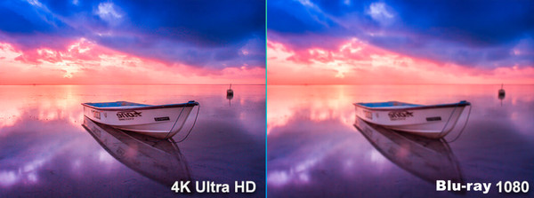

Kleuren op een beeldscherm zijn niet zomaar 'gemaakt', maar ontstaan door het mengen van verschillende kleuren. Om het mengen mogelijk te maken, bestaan er verschillende kleurmodellen. De twee belangrijkste zijn het RGB-model en het CMY-K model.
Als je inzoomt op een foto, zie je allemaal kleine puntjes. Deze puntjes worden pixels genoemd. Als je nog verder zou inzoomen, zie je rode, groene en blauwe lampjes. Iedere pixel bestaat namelijk uit deze drie lampjes. Doordat de lampjes afzonderlijk van elkaar helderder en zwakker kunnen branden, kunnen er verschillende kleuren worden gemaakt.
Dit werkt net zoals bij verf mengen. Als je geel en blauw met elkaar mengt, krijg je groen. Op deze manier mengt het RGB-model ook kleuren met elkaar. Het RGB-model doet dit met de kleuren rood, groen en blauw. Hieronder zijn een paar voorbeelden van kleuren.
Het RGB-model heeft een zwarte achtergrond. Daarom is het zo dat als je beeldscherm uitgeschakeld is, je een zwart scherm ziet. De lampjes van de pixels staan dan allemaal uit. Aangezien een computer alleen kan werken met gehele getallen, wordt de hoeveelheid rood, groen en blauw aangegeven met een decimaal getal tussen 0 en 255. Dit noem je een byte, hier staat meer uitleg over op deze pagina.
Het beeldscherm waar je deze tekst op leest, werkt volgens het RGB-model. Wat nou als je deze pagina wilt afdrukken? Dan is de achtergrond door de kleur van het papier wit. Dan kan je niet het RGB-model gebruiken, want dat werkt alleen op een zwarte achtergrond.
Daarom is er bij een witte achtergrond een ander kleurmodel, namelijk het CMY-model. De drie kleuren die hierbij worden gebruikt zijn cyaan, magenta en geel. Als je deze kleuren allemaal met elkaar mengt, krijg je donkergrijs. Er kan met het CMY-model dus geen zwart worden gemaakt.
Hier is iets op bedacht, namelijk het CMY-K model. Hierbij is de kleur zwart toegevoegd aan het kleurmodel. De K staat voor de eerste letter van key of de laatste letter van black. Dit kleurenmodel wordt dus gebruikt bij printers. Omdat kleuren op een andere manier worden gemengd dan bij het RGB-model, zien afbeeldingen er vaak net wat anders uit.
De resolutie is het aantal pixels op een beeldscherm. Hoe meer pixels, hoe meer 'gegevens' er in een afbeelding zitten. Hierdoor neemt de resolutie toe en wordt de afbeelding scherper. Het is wel zo dat hoe hoger de resolutie, hoe groter het bestand wordt. Hierdoor neemt een 4K foto meer ruimte in dan een Full HD foto. Hieronder staat een voorbeeld van verschillen in resolutie.
